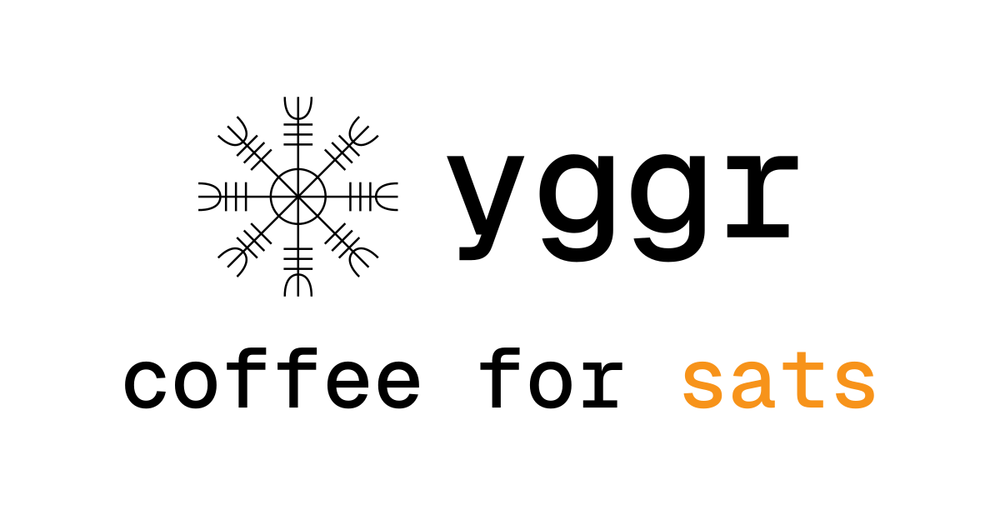

Twelve clubs, double elimination, twenty-two games over August 21–22 — and a twenty-third if the final needs a replay. The desk files each result from the field as the game ends, the bracket below redraws itself, and every entry in the contest is re-scored against it.

75,000 sats
to the best bracket.
Entries closed at first pitch. One point for every game an entry called right; the most points takes the lot, paid in bitcoin by the editor’s other desk, which sells coffee and takes the same currency. A tie goes to whoever entered first.
yggr.xyz · coffee for satsThe shape is the league’s own, off its bracket sheet: twelve clubs, double elimination, August 21–22, twenty-two games — twenty-three if the final needs a replay. Byes for the top four; five plays twelve, six plays eleven, seven plays ten, eight plays nine. Lose once and you drop to the elimination road; lose twice and the summer is over. The whole winners’ road is played Friday and everything else Saturday, first pitch at eight. Each card carries its field and its start time, as the sheet gives them; the sheet names no home club, so neither do we. The desk files winners only — the league plays no ties on playoff day, and the bracket has no column for runs. Hover a game on a desktop to see where its winner and its loser go next.
About the decider. The club that comes up the elimination road reaches the grand final having already lost once; the club that comes down the winners’ road has not lost at all. So if the elimination club wins G22, both are on one loss and nothing has been settled — they play again, and the elimination club has to beat them twice to take it. That is G23, and it exists only if G22 goes that way; otherwise it is not a game, and no entry is scored on it either way. The league’s sheet stops at twenty-two and leaves this one undated, so we give it no time and no field.
One point per game whose winner the entry called, over the games played so far; an entry that had a different club in a game cannot be right about it, which is how a wrong early pick costs more than one point. Where two entries are level on points the earlier one ranks ahead — that is the only tiebreak there is, and the clock is the time the entry mail arrived. Every entry here was mailed to the desk before first pitch and checked by a person — players against the league roster, guests by the address the mail came from. Opening an entry lays it over the bracket above, game by game, and puts it in the address bar, so the link you copy is the bracket you are looking at.
People see “bitcoin” and assume they cannot buy the coffee.
They can. Checkout takes a few taps, the payment rides the Lightning Network, and the whole thing is over before the next batter is announced. If you can read a box score, you can read the checkout. yggr — coffee for sats.